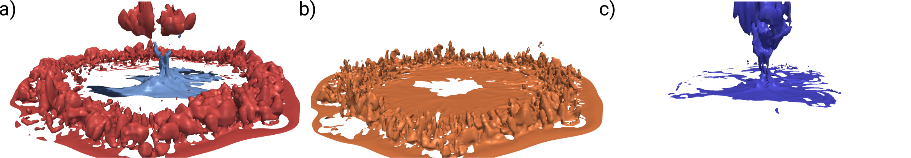

The simulations reveal that the dominating contribution to these water-vapor rings comes from surface latent-heat fluxes. In contrast, the source from evaporated rain drops is rather small inside these rings. Surface fluxes are enhanced inside of cold pools due to enhanced near-surface wind speeds. The internal circulation inside the cold pool then results in the transport of this moisture into the leading edges of the cold pool. During the initial phase of cold pool formation the displaced sub-cloud layer air is relatively moist only because the sub-cloud layer has already been relatively moist before rain started falling into it.
The solution to a simple vertical velocity equation is then explored to demonstrate why the source form evaporation can only explain roughly one third of the observed perturbation. During the early development of the cold pool, the time a sinking air parcel is exposed to the rain shaft below cloud base is set by buoyant acceleration. Using this analytical framework, it is shown that this exposure time is short compared to the time required to evaporate sufficient moisture into the sub-cloud layer. The reasons for this are (a) the small saturation deficit in the sub-cloud layer (thus small evaporation rates) and (b) the sufficiently strong negative buoyancy due to the weight of rain drops.

Isosurfaces of water vapor mass perturbations from the LES after about 1.5 hours: (a) the full perturbation at (red) +0.4 g m-3 and (blue) -1.0 g m-3, (b) the perturbation with origin from surface fluxes at +0.4 g m-3, and (c) the perturbation with origin from rain drop evaporation at +0.4 g m-3. The water vapor mass from surface fluxes gets lifted within convective plumes at the leading edge of the cold pool while the bulk of the water vapor from rain evaporation sits in the relatively dry air that descended from aloft.

{kind=link}